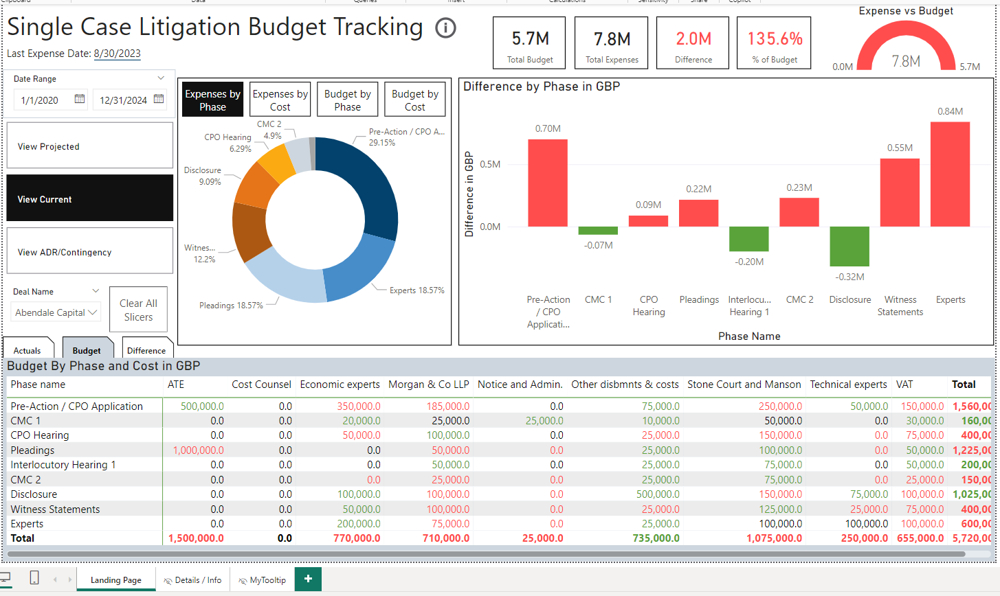
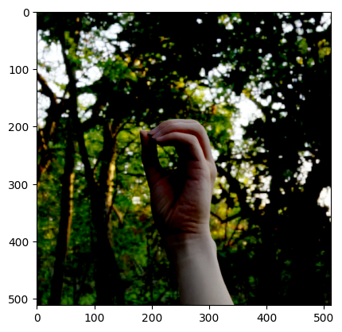

My Projects
Porridge - Cigna

 Created a full end-to-end web app which analyzed code diffs from enterprise GitHub to gather insights on
Pull Requests including how much to test and what the major changes were. (Won the Summer Innovations
Project competition)
Created a full end-to-end web app which analyzed code diffs from enterprise GitHub to gather insights on
Pull Requests including how much to test and what the major changes were. (Won the Summer Innovations
Project competition)
Red Panda Phylogeny Analysis
Conducted a phylogenetic analysis of red pandas using mitochondrial DNA sequences (creating a possible evolutionary tree). We determined sequence alignment and implemented various phylogenetic tree algorithms, leveraging beta-hill climbing. Our paper provides evolutionary insights into the monotypic taxon of the Red Panda.

Single Case Litigation Budget Tracking Dashboard - Fortress
Created a live PowerBI dashboard to assist with asset management & budget tracking. The live data which is confidential has been replaced with synthetic data.
Currently:
SignNet - ASL Alphabet Recognizer
 Implementing and training a CNN for recognizing American Sign Language letters in real time.
Blackjack RL Agent
Implementing a reinforcement learning agent optimized for playing blackjack.
Portfolio Website
This involves the creation and updating of this website!


I'm currently in my final year (graduating May 2026) at Cornell University studying Computer Science with a passion for software development, machine learning and artificial intelligence. Beyond my projects and studies, I love to travel and explore new places (pictured above). It fuels my curiosity and inspires me to approach challenges with diverse perspectives. My goal is to contribute to impactful projects that bridge cutting-edge technology with real-world needs.